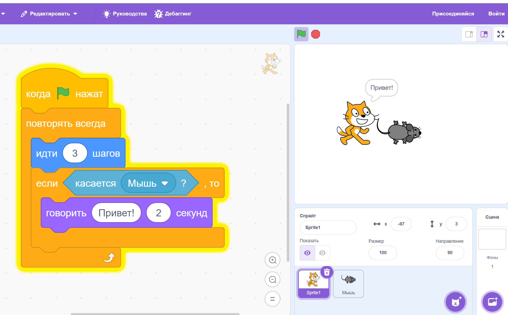
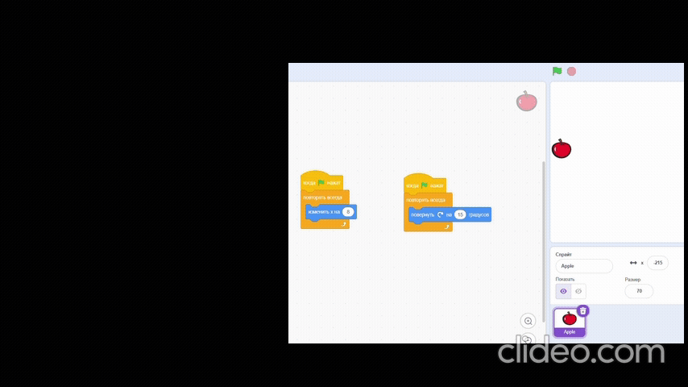
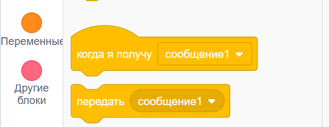

Scratch
Нам постоянно нужен цикл [повторять всегда]Движение
идти [10] шагов
изменить x на [10]
плыть

Осторожно: при использовании этого блока могут возникнуть баги. Чтобы их избежать, используй ещё один скрипт (цикл), например, Когда зел. флаг нажат или Когда я получу "сообщение":
{kind=link}
перейти в x: () y: ()
Этот блок пригождается, когда нужно сразу же, без анимации установить объект в каком-то месте.
Например, когда нам нужно расположить объект в его первоначальном положении.
Управление (повторять всегда/[10] раз)
Цикл "повторять всегда"
Не забывай, что это очень важный блок. В 99% случаев он нам нужен в нашей игре.
Он нужен как при создании постоянного движения, так и при проверке условий (например, если касается).
[повторять всегда] можно использовать вместе с условиями – [если, то]:
{kind=link}
Также можно делать не один, а два и более скриптов с повторять всегда:
{kind=link}
События (сообщения)
[передать сообщение] и [Когда я получу сообщение]
Когда мы хотим из одного объекта достучаться до другого (то есть, повлиять или повзаимодействовать), нам нужно использовать сообщения.
